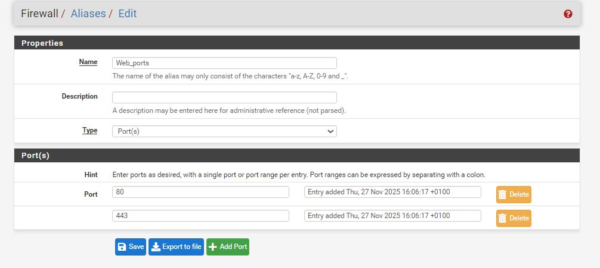
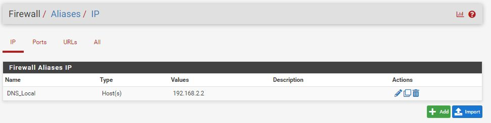
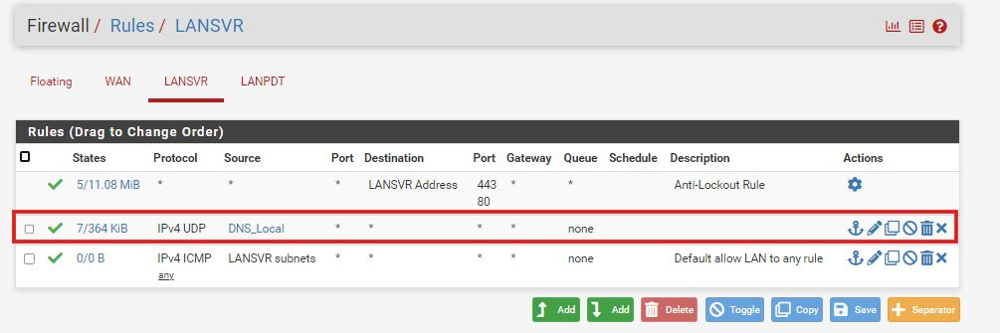
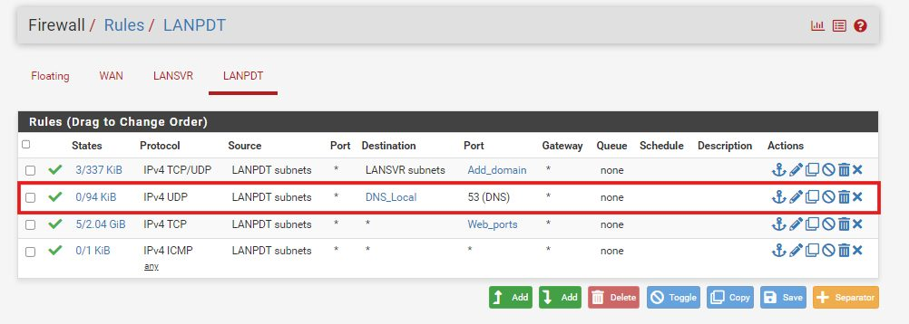
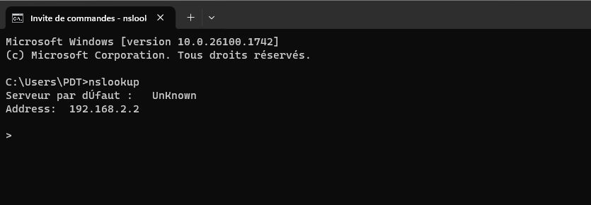
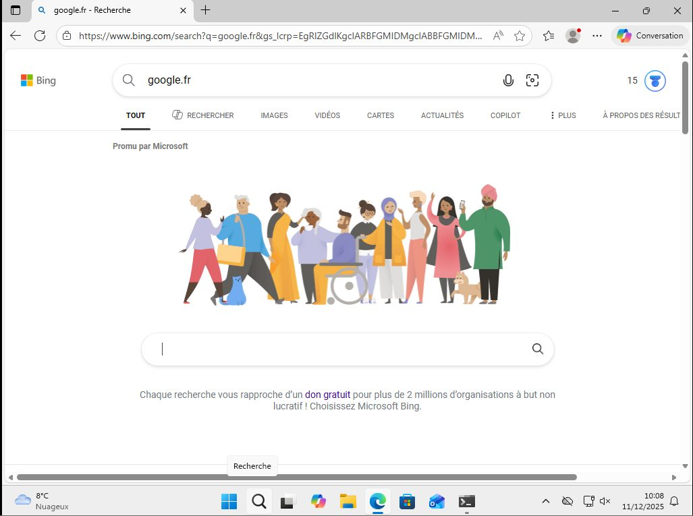

Étape 2 sur 5
Alias et règles web / DNS
Regrouper les ports et les hôtes dans des alias puis autoriser uniquement les flux utiles.
Principe
Un alias regroupe plusieurs ports ou adresses sous un seul nom : les règles restent lisibles et faciles à modifier.
1. Trafic web
Création d'un alias de ports « Web_ports » contenant les ports 80 (HTTP) et 443 (HTTPS).
2. Trafic DNS
Création d'un alias d'hôte « DNS_Local » qui désigne le serveur DNS (DC1), puis d'une règle pour DC1 et d'une règle pour le PDT sur l'interface LANPDT.
3. Tests depuis le PDT
Une résolution avec nslookup, puis une navigation web, prouvent que le DNS fonctionne et que les ports sont correctement paramétrés.
Captures






Savoir-faire mobilisés
- Alias pfSense
- Règles de filtrage
- DNS